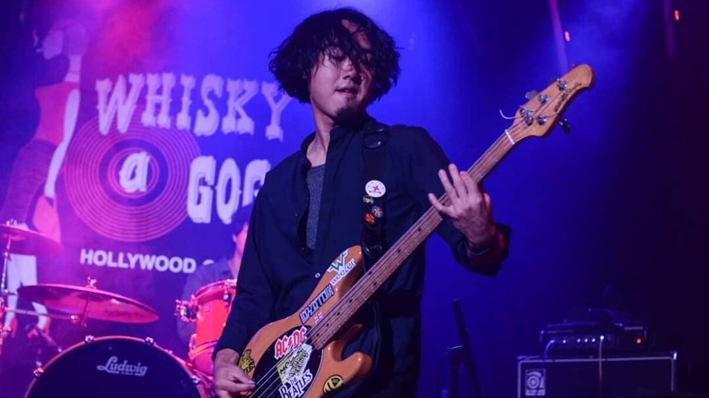
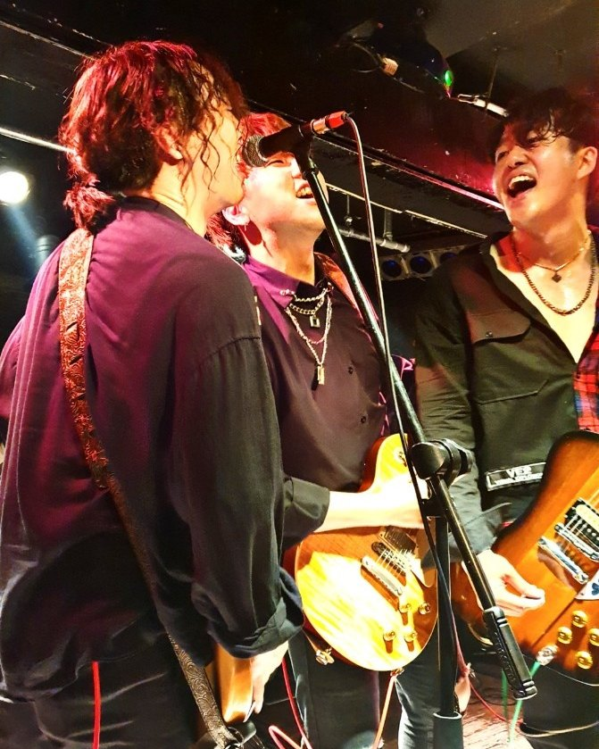
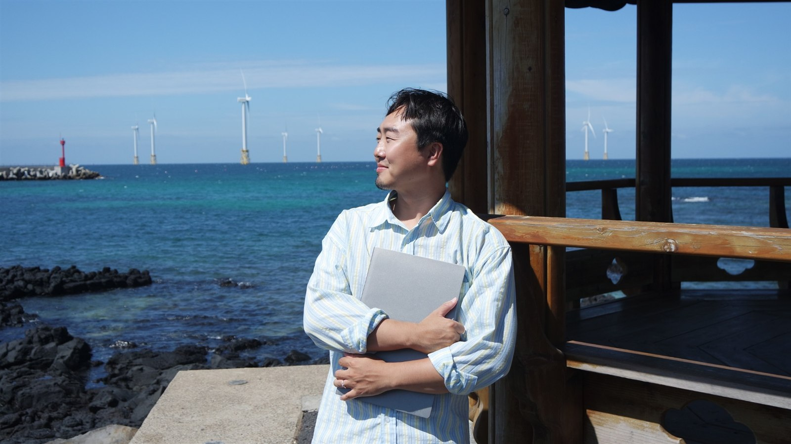
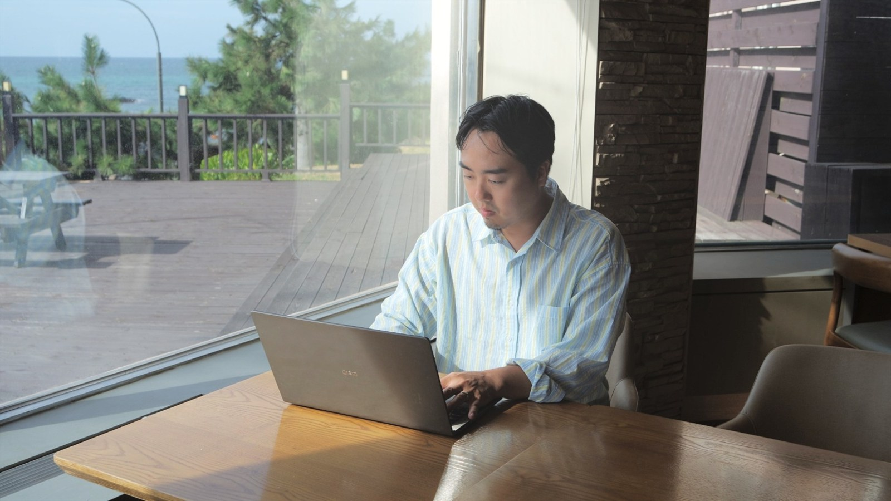
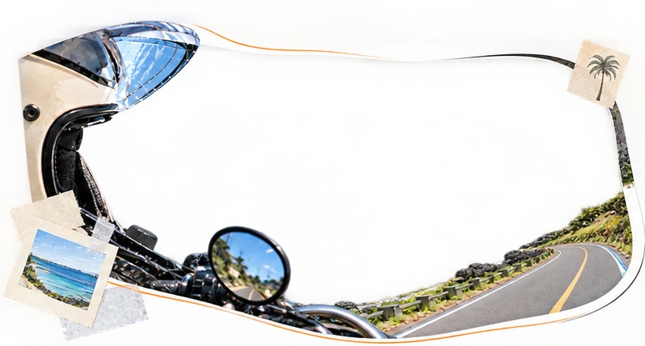

회사에 얽매이지 않고 원하는 곳에서 자유롭게 일하는 삶. 누구나 한 번쯤 꿈꾸지만 쉽게 닿기 어려운 모습이다.
제주에서 만난 백록마케팅 이재은 대표는 그런 삶에 가장 가까운 사람이었다. 그러나 그 삶이 처음부터 주어진 것은 아니다.
같은 일을 하더라도, 조금 더 나다운 곳에서


그의 출발점은 마케팅이 아니라 음악이었다. 오랫동안 음악인을 꿈꾸며 약 10년간 밴드 활동을 이어왔지만, 음악만으로 안정적인 삶을 꾸려가기에는 현실적인 어려움이 있었다.
새로운 길을 고민하던 그는 마케팅 분야에 발을 들였고, 서울에서 에이전시와 인하우스를 오가며 실무 경험을 쌓았다. 바쁘게 돌아가는 일상 속에서 그의 하루는 늘 분주했다.
전환점은 휴가로 찾은 제주에서 찾아왔다. 몇 차례 제주를 오가던 어느 밤, 카페에서 일을 마치고 숙소로 돌아가는 길에 마주한 풍경이 이대표 마음을 움직였다.
“어차피 서울에서처럼 밤늦게까지 일해야 한다면, 조금이라도 더 여유를 느낄 수 있는 곳에서 일하는 게 낫지 않을까 생각했어요.”
— 이재은 대표
그는 새로운 아이디어로 창업하겠다는 목표를 세우고 제주행을 결심했다. 창업 지원 사업을 알아보고 지원을 받았고, 이사비와 월세 지원 같은 청년 대상 제도도 활용했다. 정착에 필요한 정보는 제주 지역 오픈채팅방과 창조경제혁신센터, 현지에서 만난 사람들을 통해 얻었다. 꿈을 현실로 옮기기 위해 꼼꼼히 준비한 이주였다.
그러나 제주에 왔다고 현실이 저절로 달라지지는 않았다. 매일 달리고 수영하고 한라산에 오르는 여유로운 일상을 기대했지만, 막상 마주한 가장 큰 숙제는 생계였다. 제주에 왔다고 누가 돈을 주는 것은 아니었고, 새로 시도한 아이디어 창업도 뜻대로 풀리지 않았다.
시행착오는 3년가량 이어졌다. 그 시간 동안 이 대표는 스스로에게 같은 질문을 반복했다.
‘무엇이 문제일까?’
3년을 돌아서야 보인 것
답은 원점에 있었다. 이 대표는 남들이 하는 일을 따라가는 대신 자신이 진정으로 원하는 것이 무엇인지, 어떤 일을 가장 잘하는지를 다시 돌아봤다. 전문성을 갖춘 진정성 있는 사람이 되고 싶다는 생각 끝에 떠오른 것은 서울에서 쌓아 온 마케팅 경험이었다. 제주 이주 3년 차, 그는 가장 잘하는 일인 온라인 마케팅으로 돌아와 지금의 회사를 꾸렸다.
일감은 대부분 입소문으로 들어온다. 지인이 ‘제주에서 마케팅을 제일 잘한다면서요?’라고 물어 오면 ‘네, 접니다’라고 답하며 시작한 일도 있다.
이 대표가 가장 중요하게 생각하는 것은 눈앞의 영업 실적보다 고객에게 보여주는 결과다. 좋은 기획과 실행으로 성과를 만들어내면 자연스럽게 다음 기회로 이어진다고 믿기 때문이다. 안정적인 회사 운영을 위해 단발성 프로젝트와 함께 구독형 마케팅, 정기 컨설팅도 병행하고 있다.
일하는 방식에도 자신만의 원칙을 세웠다. 불필요한 이동과 반복 업무를 줄이고, 중요한 일에 더 집중하는 것이다. 직원이 있을 때부터 회의와 업무를 온라인으로 전환했고, 회의 기록과 자료 정리에는 AI를 적극 활용하고 있다. 클로드(Claude)를 통해 문서와 파일을 관리하면서 업무에 드는 시간과 수고도 덜었다.

이러한 변화는 일하는 공간의 자유로 이어졌다. 사무실에 머무르지 않아도 집에서, 때로는 바다가 보이는 카페에서 업무를 이어갈 수 있게 된 것이다.
그렇다고 모든 만남을 온라인으로 대신하지는 않는다. 대면 소통을 선호하는 제주 고객의 특성을 고려해 첫 미팅은 직접 진행하고, 이후에는 온라인으로 협업하며 효율성과 고객과의 신뢰를 함께 챙기고 있다.
그는 서울과 제주의 가장 큰 차이로 경쟁의 밀도를 꼽았다.
“서울은 사람이 많기 때문에 내가 잘해도 잘한 게 아닌 것처럼 보일 때가 있어요. 제주는 사람이 없기 때문에 조금만 잘해도 잘한 것처럼 보이고, 그러다 보니 동력이 더 생겨요.”
— 이재은 대표
그는 서울 직장 시절 연봉과 비교하면 지금 매출이 10배 이상 늘었다고 말한다. 물론 이는 개인의 경험이며, 지역 특성뿐 아니라 그가 쌓아 온 경험과 고객 관계, 운영 방식이 함께 작용한 결과일 것이다.
제주의 낭만을 현실로 만드는 조건

이 대표는 제주가 낭만이 가득한 환상의 섬처럼 보이지만 막상 와 보면 그렇지만은 않다고 말한다. 그렇다고 제주가 잘못된 것은 아니다. 문제는 준비 없이 낭만만 보고 온 방법이었다.
그가 제주살이를 꿈꾸는 사람들에게 가장 먼저 권하는 것도 의외로 현실적인 ‘의식주’의 안정이다. 입고, 먹고, 머무는 기반이 흔들리면 오래 버티기 어렵다는 것이다. 그 역시 원룸에서 시작해 지금은 30평 아파트에서 지내며, 생활이 안정되자 일의 효율도 눈에 띄게 올랐다고 한다.
그래서 이 대표의 조언은 분명하다. 무작정 제주에 오기보다, 먼저 나는 어떤 사람인지부터 돌아보라는 것이다. 그 다음에는 그런 내가 제주와 잘 어울리는 사람인지 따져 보고, 제주에 적응하려면 무엇을 준비해야 할지 미리 찾아보라고 했다.
그 답은 머릿속으로만 고민할 것이 아니라, 제주에 직접 살아보며 찾아보라고 조언했다. 자신에게 맞는 환경인지, 어떤 일을 하며 삶의 터전을 꾸려갈 수 있을지 미리 경험해 보라는 뜻이다.
제주에서의 5년은 낭만을 그대로 실현한 시간이 아니라, 낭만을 일상으로 이어 갈 방법을 찾아온 시간이었다.
이재은 대표가 추천하는 제주 드라이브코스 3곳
산방산 인근 도로에서 애월 해안도로, 남원읍 남조로 도로까지. 섬 안의 사진을 옆으로 넘겨 보세요.

01. 산방산 인근 도로
롤러코스터를 타는 듯한 짜릿함
산방산 인근에서 내리막길을 따라 달리는 구간으로, 롤러코스터를 타는 듯한 재미가 있는 곳이다. 이 대표가 가장 좋아하는 코스로, 한 번 방문하면 같은 구간을 세 번씩 달릴 정도로 즐겨 찾는다.
사진 네이버 지도 로드뷰 (임시 사용)
- 발행일
- 인터뷰어
- 유수진
- 인스타그램
- @e_jeju.min